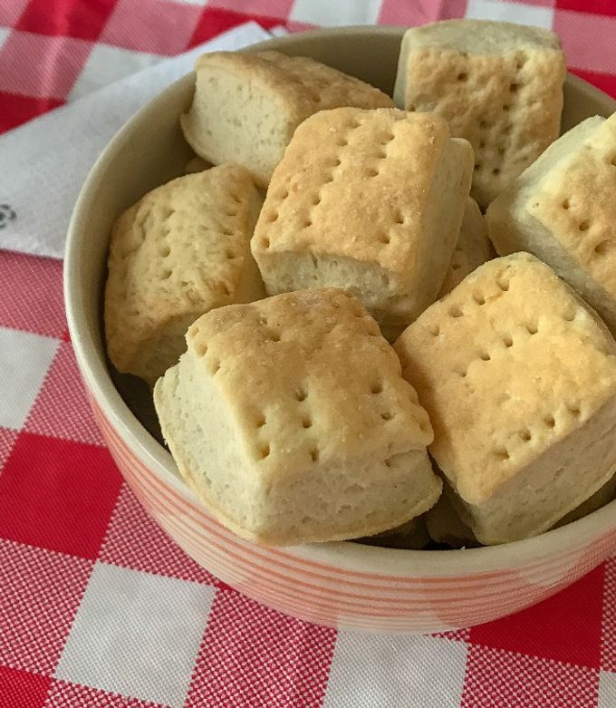

Ingredientes
- 1 taza de harina común (o leudante)
- 4 cucharadas de aceite
- ½ cucharadita de sal
- ½ taza de agua tibia (aproximadamente)
Preparación
- Poné la harina en un bol y agregale la sal.
- Sumá el aceite y de a poco el agua tibia mientras mezclás con las manos o una cuchara.
- Formá una masa blanda pero que no se pegue en los dedos.
- Estirá la masa sobre la mesada con un palo de amasar (o aplastala con las manos) hasta que tenga un centímetro de grosor.
- Cortá los bizcochitos con un vaso chico o un cuchillo en cuadraditos.
- Pinchalos con un tenedor y llevalos a una placa para horno limpia.
- Cocinalos a fuego fuerte durante 10 a 12 minutos hasta que estén dorados.